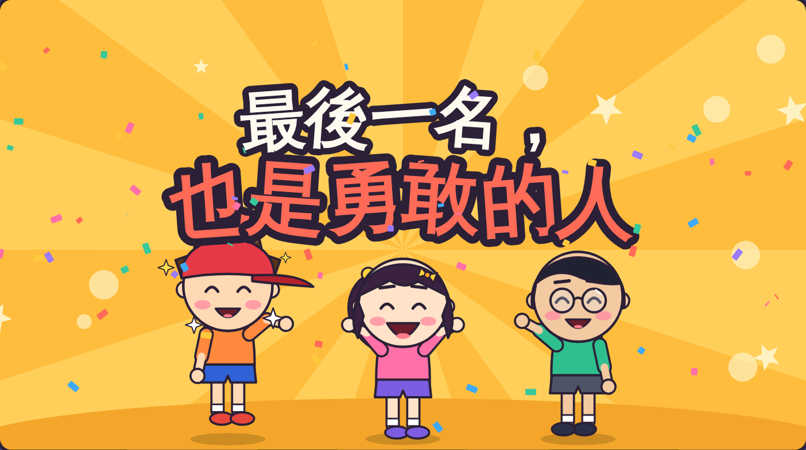
溝通小劇場｜三年級資源班
今天要學什麼？
1
輸了，心情不好
是正常的
會難過、會生氣，都沒關係。
2
學會
「勇敢四步驟」
讓自己好起來，也不讓別人難過。
溝通小劇場｜最後一名，也是勇敢的人
想一想
你有沒有輸過？
一起看影片
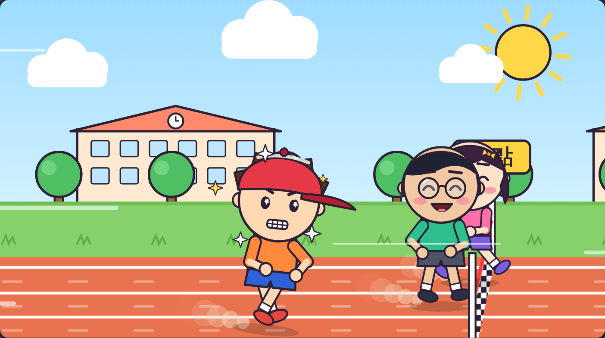
看的時候，注意：
- 阿樂輸了，做了什麼？
- 大家的心情怎麼樣？
- 阿樂怎麼讓自己好起來？
打開影片
溝通小劇場｜最後一名，也是勇敢的人
阿樂做了什麼？
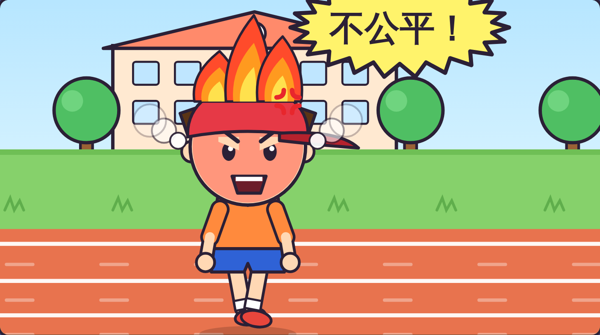
用力跺腳，
頭上冒火。
把帽子
丟到地上。
大喊：「不公平！
我不玩了！」
溝通小劇場｜最後一名，也是勇敢的人
結果呢？
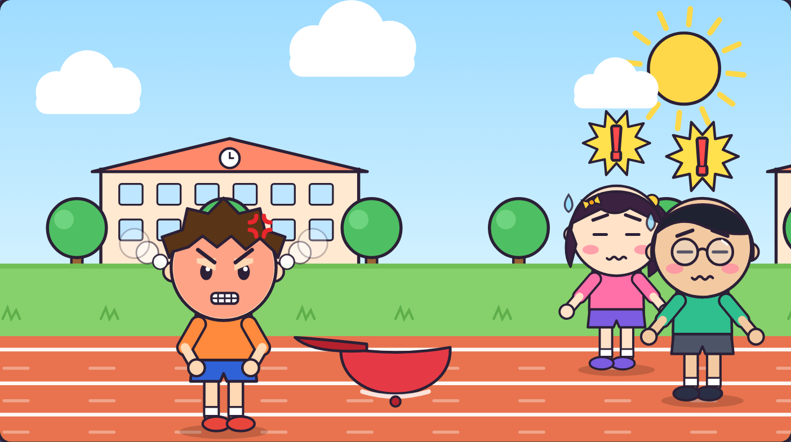
小安和阿凱嚇一跳，不開心。
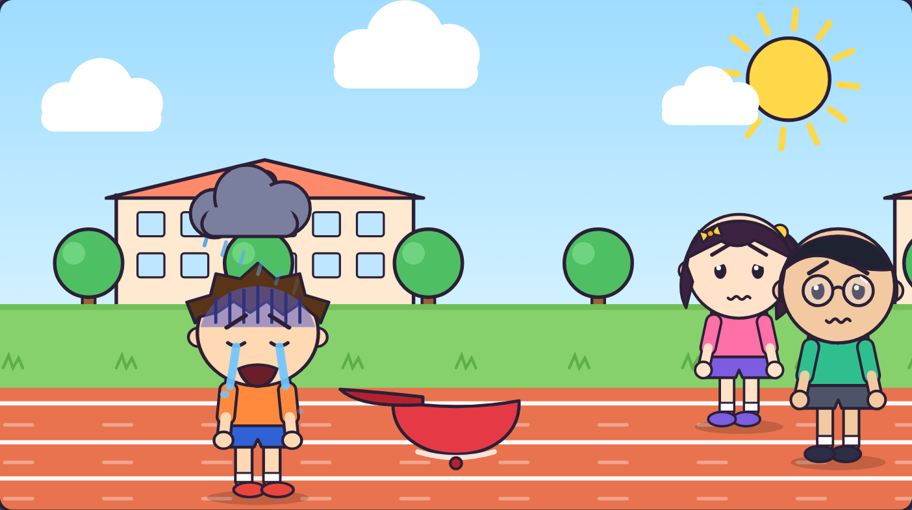
事情沒有變好，阿樂更難過了。
溝通小劇場｜最後一名，也是勇敢的人
輸了的時候
溝通小劇場｜最後一名，也是勇敢的人
勇敢四步驟
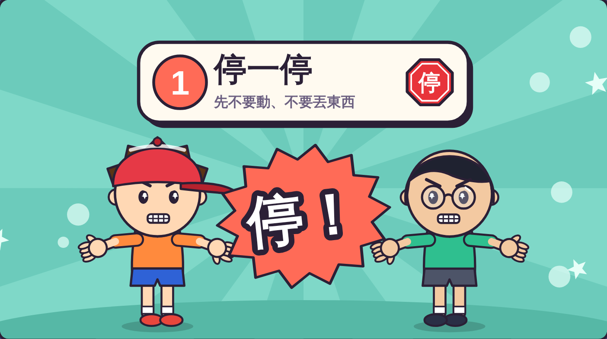
手勢
雙手往前比「停」。
要做的事
先不要動，
不丟東西、不罵人。
一起做做看！
溝通小劇場｜勇敢四步驟
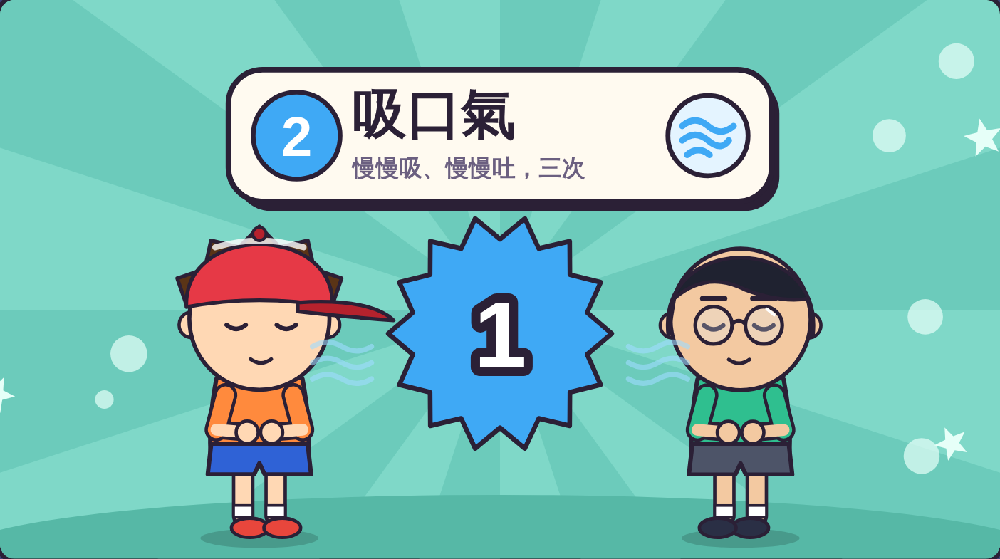
手勢
手放在肚子上。
要做的事
慢慢吸，肚子變大；
慢慢吐，肚子變小。
做三次。
一起數：1、2、3
溝通小劇場｜勇敢四步驟
手勢
手放在胸口。
要說的話
「我很難過，
因為我輸了。」
換你說說看！
溝通小劇場｜勇敢四步驟
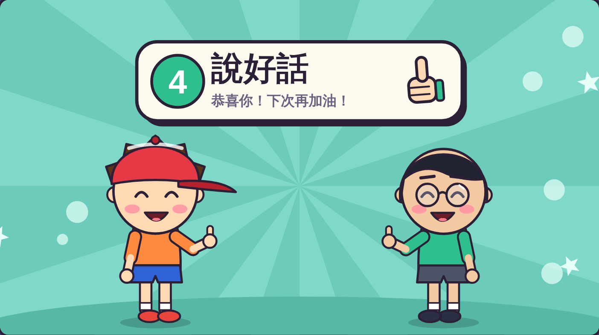
對別人說
「恭喜你！」
對自己說
「我有努力，
下次再加油！」
比讚，說說看！
溝通小劇場｜勇敢四步驟
阿樂再比一次
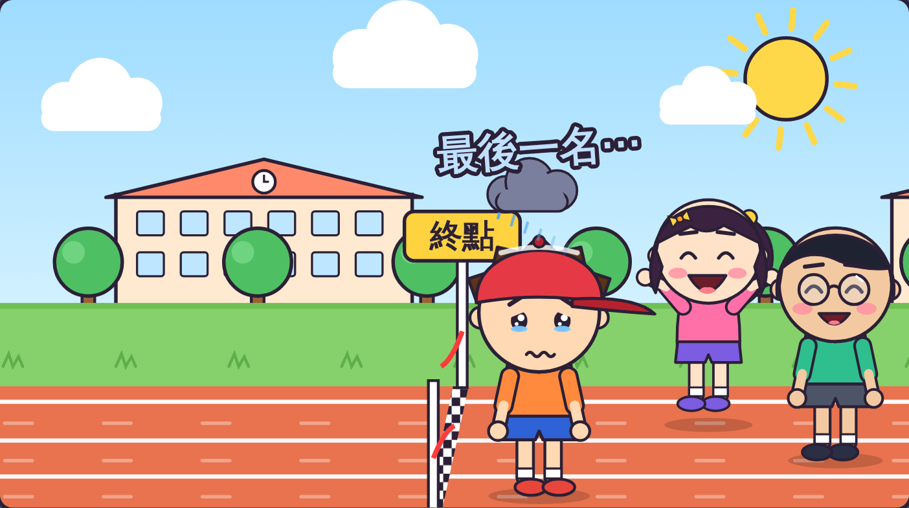
還是最後一名，
阿樂用勇敢四步驟。
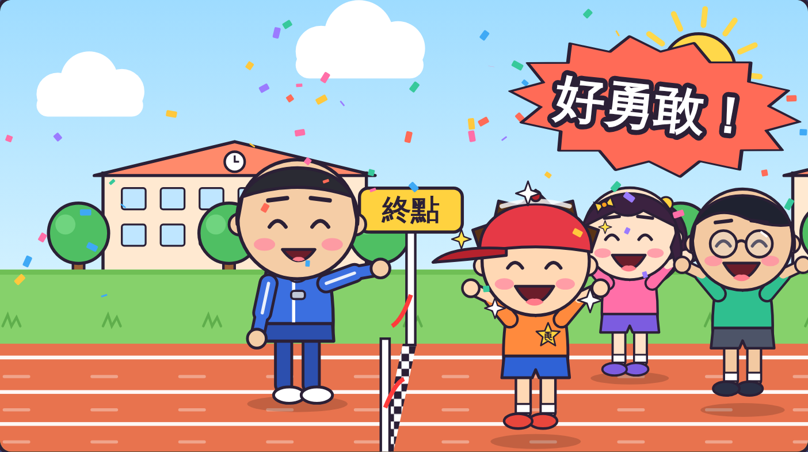
老師說：「跑到最後，
好勇敢！」
溝通小劇場｜最後一名，也是勇敢的人
玩遊戲輸了，也可以用
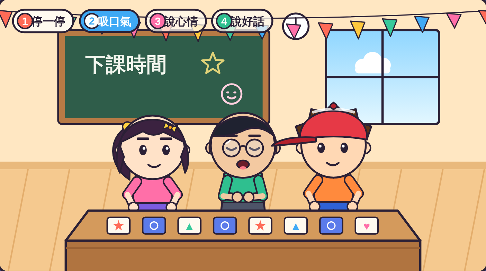
下課玩遊戲，
這次是阿凱輸了。
他也用勇敢四步驟，
最後笑著說：
「恭喜你！
我們再玩一次！」
溝通小劇場｜最後一名，也是勇敢的人
換你演演看
老師抽一張情境卡，你用勇敢四步驟演出來。
溝通小劇場｜最後一名，也是勇敢的人
一起念口訣
停一停，吸口氣，
說心情，說好話；
最後一名也很棒，
我有努力到最後！
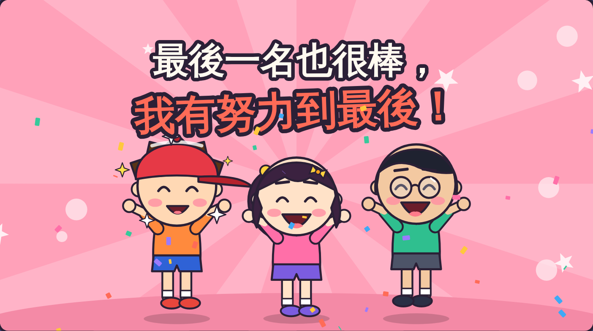
挑戰題時間
打開「勇敢四步驟挑戰題」，
回答 8 個問題。
- 按喇叭，聽題目。
- 答錯沒關係，可以再試一次。
- 做完，把成績頁給老師看。
溝通小劇場｜最後一名，也是勇敢的人